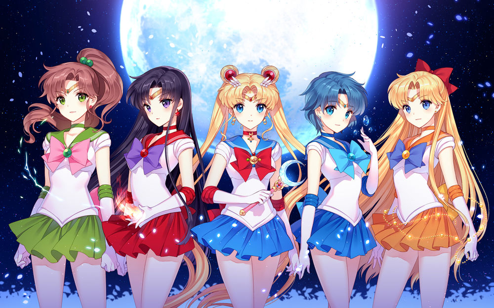

Персонажи

Персонажей в аниме Sailor Moon Crystal можно разделить на три группы:
- Главные
- — основные действующие лица на протяжении всего аниме (Сейлор воины и др.)
- Второстепенные
- — лица, появляющиеся редко в эпизодах, но иногда могут играть важную роль
- Эпизодические
- — лица, появлявшиеся в сериале всего один раз.
Некоторое главные герои
- Усаги Цукино
- главная героиня аниме Sailor Moon Crystal. Она — земная сторона воина любви и справедливости Сейлор Мун.
- Минако Айно
- одна из главных героинь аниме Sailor Moon Crystal. Она — земная сторона воина любви и красоты Сейлор Венеры.
- Сэцуна Мэйо
- одна из главных героинь аниме Sailor Moon Crystal. Она — земная сторона и новое воплощение воина времени Сейлор Плутон.
- Чибиуса Цукино
- главная героиня аниме Sailor Moon Crystal. Она — земная сторона воина любви и дружбы Сейлор Чиби Мун.
- Ами Мидзуно
- главная героиня аниме Sailor Moon Crystal. Она — земная сторона воина любви и мудрости Сейлор Меркурий.
- Усаги Цукино
- главная героиня аниме Sailor Moon Crystal. Она — земная сторона воина грома и силы Сейлор Юпитер